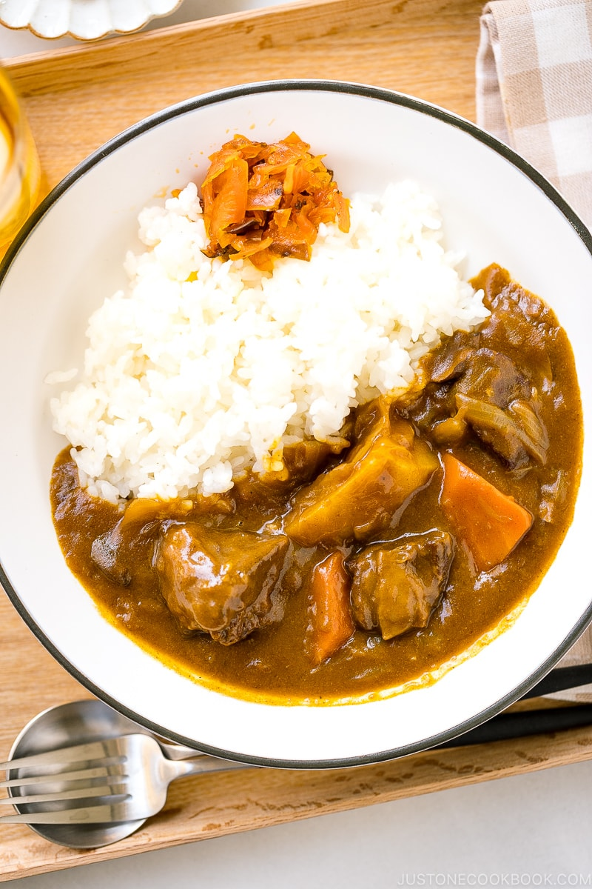

Beef Curry

Description
Japanese Curry Rice or Karē Raisu (カレーライス) is an extremely popular dish for all ages in Japan. In this version we will add beef to the curry (ビーフカレー).
Ingredients
- Beef (Chuck roast is highly recommended
- Veggies:
- Mushrooms
- Garlic and Ginger
- Wine
- Beef stock/broth
- Seasonings:
- Tomato Paste
- Japanese curry powder
- Japanese curry roux
- Bay leaf
- Etc.
- Optional Add-Ins:
- Grated Apple
- Milk
- Worscestershire Sauce